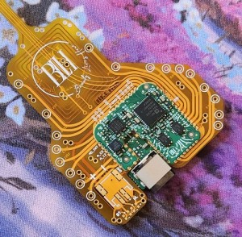

BLH Wig Sensor
Part of a complex, multi-dimensional research project, this device is an advanced,
ultra-low-power wireless electrosensor for health monitoring.
It is sewn with conductive thread to electrodes made of conductive fabric on the inside of a wig cap,
before the hair is attached. Electrodes rest against the scalp or hair, and are used to measure biomarkers.
The data is then transmitted over Bluetooth to the wearer's phone.
Project Details
This was another project with my current employer. The client came to us with a very ambitious set of goals, and we delivered.
Designing and manufacturing at reasonable cost a prototype sensor unit was challenging. The first revision was entirely flex PCB,
however this limited routing density and made the circuit less durable. The second revision, shown above, is a multi-board assembly,
composed of two 4-layer rigid PCBs with a flex PCB sandwiched between them to act as both an interposer and board-to-board connector,
as well as to contain the NFC and Bluetooth antennas, battery connection, indicator LEDs, and electrode tie points.
Firmware development was the second challenge. We chose an nRF52840 microcontroller to be the heart of the system,
and for the second revision we switched from using its limited internal ADCs to a powerful external analog electrochemical front-end chip.
The official nRF SDK uses the Zephyr RTOS, which is extremely powerful and has excellent power-saving features
(necessary on a tiny wearable), but its peripheral driver architecture does not play well with the typical vendor driver.
And our analog front-end chip had the typical vendor driver.
If I were to do this project again, I would almost certainly bite the bullet and rewrite the firmware in Rust.
In spite of this also meaning that I would need to port the analog chip's driver not only to a different framework
but to another language entirely, it would also have eliminated a whole class of memory bugs which we experienced in testing
on the Zephyr-based C firmware. Zephyr is an incredibly complex system compared to something like Embassy, which
in practice accomplishes many of the same things, sometimes with lower power usage.
Image Gallery
The original all-flex board revision, with much less advanced sensing capabilities.
 The version 1 cap being made, showing conductive thread electrode patches.
The version 1 cap being made, showing conductive thread electrode patches.
 The version 2 PCB partially sewn into a wig cap.
The version 2 PCB partially sewn into a wig cap.